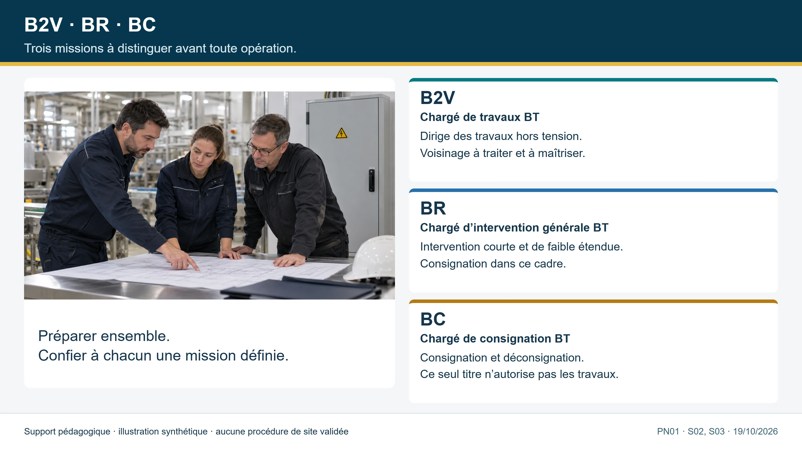
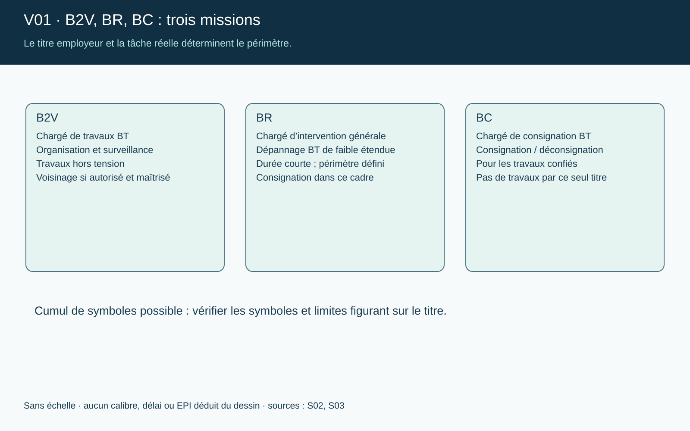
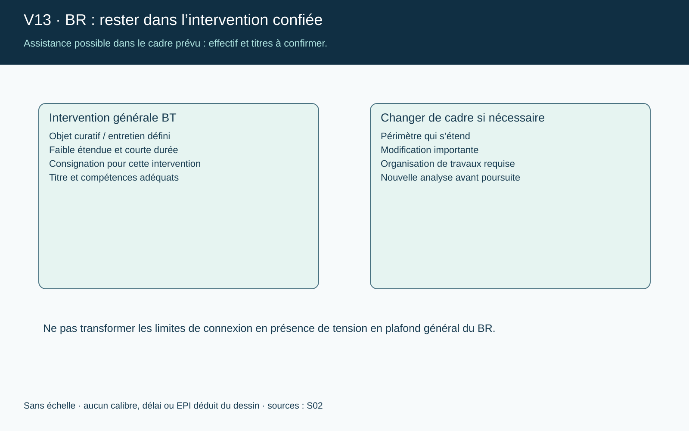
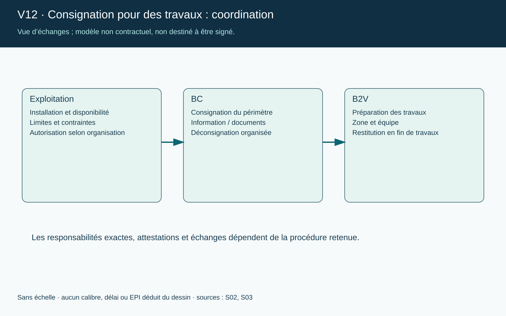
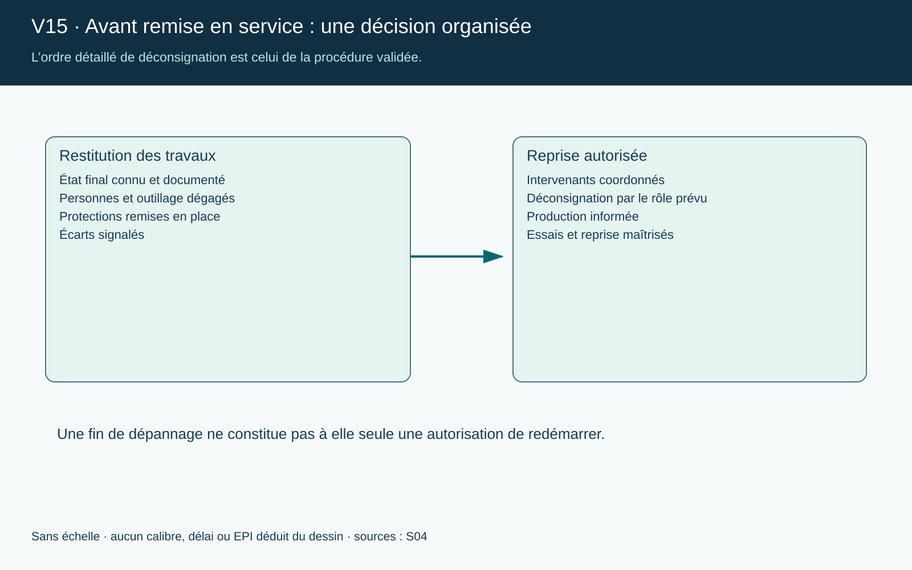
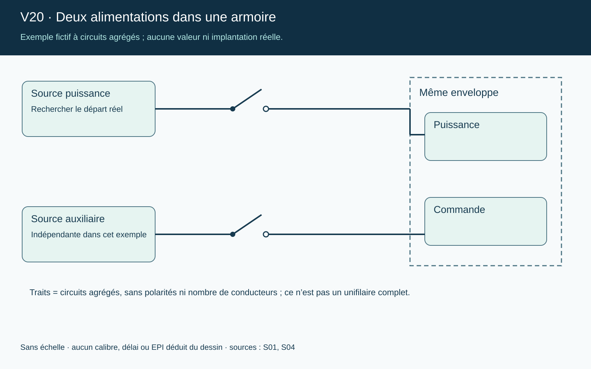
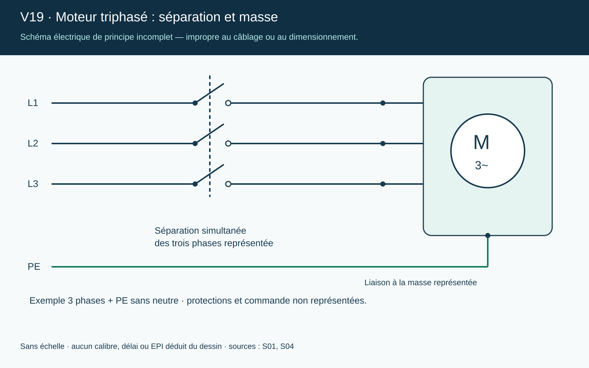
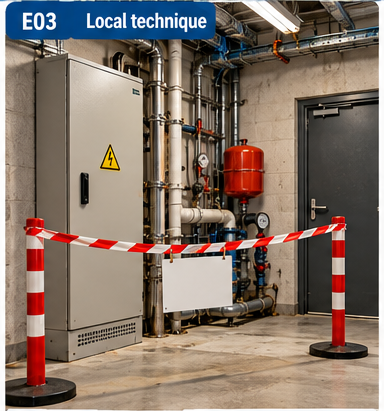

Hors programme de la session A260B4A. La formation du 24 et du 27 novembre prépare des non-électriciens (B0, H0, H0V, BS, BE Manœuvre). Cet espace est une lecture complémentaire pour les personnes qui ont déjà un poste ou un titre d’électricien. Il ne fait pas partie du parcours, n’est pas évalué, et les symboles B1, B2, BR et BC relèvent d’une formation distincte, avec sa propre pratique. Le titre est délivré par l’employeur.
1 · Symboles d’habilitation et titre
Le symbole se lit en trois caractères : la tension (B basse, H haute), le type d’opération, puis un attribut éventuel (V = voisinage).
Symbole
Lecture
H0V
Personne non électricienne, domaine HT : opérations d’ordre non électrique, y compris en zone de voisinage renforcé HT (V = voisinage renforcé) ; H0 sans V : voisinage simple.
B2V
Chargé de travaux d’ordre électrique en BT, hors tension ou au voisinage.
Titre d’habilitation. Il est établi et signé par l’employeur, qui désigne aussi le titulaire ; il précise l’identité du titulaire, les symboles et le domaine de tension. Une opération qui n’y figure pas n’est pas autorisée, même si elle paraît simple. Cadre : Code du travail, art. R. 4544-9 (opérations réservées aux travailleurs habilités), R. 4544-10 (l’employeur délivre l’habilitation dans les limites des attributions confiées, après formation théorique et pratique ; carnet de prescriptions) et R. 4544-11 (habilitation spécifique pour les travaux sous tension).
Attestation médicale (depuis le 1er octobre 2025). Pour les habilitations qui autorisent le voisinage de pièces nues sous tension, ou les travaux sous tension, la validité de l’habilitation est subordonnée à une attestation d’absence de contre-indication médicale, délivrée par le médecin du travail et valable 5 ans (décret n° 2025-355 du 18 avril 2025 ; arrêté du 26 septembre 2025 ; INRS). Selon la liste reprise par la FNTP, B2V et BR sont concernés ; la consignation (BC), les essais, mesurages, vérifications et manœuvres, ainsi que B0, H0 et BS, ne le sont pas. H0V ne figure pas dans cette liste : l’employeur confirme le cas de chaque titulaire avec le service de prévention et de santé au travail. Les avis d’aptitude délivrés avant le 1er octobre 2025 tiennent lieu d’attestation pendant 5 ans à compter de leur délivrance.
Recyclage. La périodicité est à définir par l’employeur selon les opérations effectuées ; 3 ans est la valeur recommandée (INRS ED 6127, § 6.2.1), pouvant être réduite en cas de pratique occasionnelle ou exceptionnelle ; elle est plus courte pour les travaux sous tension. Recyclage aussi lors d’un changement de fonction ou d’installation. La décision relève de l’employeur.
À l’oral : lisez votre titre actuel s’il en existe un : chaque symbole couvre-t-il bien ce que l’on vous demande réellement de faire ?
2 · Voisinage : H0V et B2V
Autour d’une pièce nue sous tension, la zone de voisinage s’étend de la pièce jusqu’à 3 m pour les tensions jusqu’à 50 kV, BT comprise (arrêté du 9 juillet 2013, art. 2). On y distingue le voisinage simple (zone la plus éloignée) et le voisinage renforcé (zone la plus proche). En BT, la limite du voisinage renforcé se confond avec la distance minimale d’approche, soit 0,30 m (INRS ED 6127, p. 40 ; annexe de l’arrêté, ligne 1 kV). Les zones d’environnement : zone 0 investigation (jusqu’à 50 m), zone 1 voisinage simple, zone 2 voisinage renforcé HT, zone 3 travaux sous tension HT, zone 4 voisinage renforcé BT (manuel de préparation à l’habilitation électrique, p. 50-55).
Situation
Réflexe
Voisinage simple (zone 1)
Accessible aux B0 / H0 selon le titre (comme aux B1, B2, BS en BT) ; surveillance et matérialisation de la zone.
Voisinage renforcé BT (zone 4, de 0,30 m à la pièce nue)
Accès sur autorisation de travail ou d’intervention, avec habilitation de voisinage renforcé (B1V, B2V, BR, BC, BE, B1T, B2T…) ; B0 non admis. Ordre de protection : 1) consigner pour supprimer le voisinage ; 2) à défaut, interposer un obstacle (habillage, nappage, écran) ; 3) à défaut, opérer avec protection faciale et gants isolants (travail sans gants ni écran facial interdit).
Voisinage renforcé HT (zone 2)
Habilitations H0V, H1V, H2V, HC, HE ; surveillance par un surveillant de sécurité électrique pour H1V / H2V.
Rôle du B2V
Prépare l’opération, délimite la zone, donne les consignes, assure la sécurité de son équipe, ne commence qu’après consignation ou mise hors de portée assurée.
Piège. « Hors tension » signifie vérifié absent de tension, pas « interrupteur ouvert ». Tant que la consignation n’est pas attestée, l’installation est considérée sous tension.
À l’oral : dans votre établissement, quelles zones sont en voisinage ? Qui les délimite, et comment ?
3 · BR : intervention BT générale
L’intervention est une opération limitée de courte durée sur un circuit, un équipement ou un appareil : dépannage, remise en état, connexion et déconnexion, remplacement d’un élément, mesurage, vérification, essai. Le chargé d’intervention agit dans les limites de son titre d’habilitation et des consignes de l’employeur.
Préparer. Identifier l’installation, la tension, les circuits voisins ; lire les prescriptions ; s’assurer que l’opération entre dans le titre.
Se mettre en sécurité. Préférer l’intervention hors tension, après consignation (voir séquence 5). Délimiter la zone, vérifier les EPI et l’outillage isolé.
Vérifier l’absence de tension avec un dispositif adapté, contrôlé avant et après usage.
Intervenir dans la limite de la tâche ; ne pas élargir l’opération sans nouvelle analyse.
Terminer. Ranger, remettre en état, informer le responsable de l’installation, restituer et demander la remise sous tension selon la procédure.
Travaux sous tension. Ils relèvent d’une habilitation spécifique (symbole T) et de procédures dédiées : un BR seul n’autorise pas à travailler sous tension. La connexion et la déconnexion en présence de tension ne sont permises que dans des conditions limitées : au maximum 500 V et 63 A en courant alternatif, hors charge (INRS ED 6127).
Consignation et BR. Dans le cadre d’une intervention, la consignation peut être confiée à un chargé d’intervention BR, pour l’ouvrage sur lequel il intervient (la formation BR comprend la « consignation pour son propre compte », sans habilitation BC distincte, selon l’INRS). Le BR est admis hors tension, en voisinage simple et en voisinage renforcé. Dans le cadre d’un travail, elle est confiée à un chargé de consignation BC (ou HC en HT). L’habilitation doit s’accompagner d’une désignation par l’employeur. Sources : OPPBTP, INRS ED 6127.
À l’oral : décrivez la dernière intervention de dépannage que vous avez faite : à quel moment avez-vous contrôlé l’absence de tension ?
4 · BC : consignation
La consignation protège les personnes qui travaillent sur un ouvrage ou une installation en les séparant de toute source de tension. Le BC consigne pour que des tiers (chargé de travaux et son équipe) puissent travailler ; il ne réalise pas lui-même les travaux. L’identification préalable de l’équipement et de toutes ses sources d’énergie précède l’opération ; puis les opérations s’enchaînent dans l’ordre (INRS ED 6109, p. 14-16) :
Séparation. Ouvrir les organes de coupure qui isolent l’ouvrage de toutes les sources (y compris retours possibles : secours, groupe, photovoltaïque, condensateurs).
Condamnation. Immobiliser les organes ouverts en position d’ouverture (cadenas, verrou), signaler avec une pancarte « interdiction de manœuvrer ».
Identification. S’assurer que l’ouvrage sur lequel on va intervenir est bien celui qui a été séparé et condamné.
Vérification d’absence de tension (VAT). Avec un dispositif adapté : contrôle du VAT sur une source connue, mesure sur tous les conducteurs, contrôle du VAT après.
Cinquième opération, mise à la terre et en court-circuit, immédiatement après la VAT lorsque l’analyse des risques l’exige (risque de retour de tension, énergie stockée). À la déconsignation, les opérations se font généralement en sens inverse, dans un ordre confirmé par l’analyse des risques. Le chargé de consignation est désigné par l’employeur ; il peut faire exécuter les opérations par son personnel.
Document / action
Rôle
Attestation de consignation
Le consignateur la remet au chargé de travaux ou d’intervention : l’ouvrage est consigné. Elle peut être établie en une ou en deux étapes (INRS ED 6127).
Autorisation de travail et instructions de sécurité
Le chargé de travaux les utilise pour donner le feu vert et les consignes à son équipe.
Avis de fin de travail
Le chargé de travaux annonce que tout le monde est sorti, que l’outillage est retiré et que l’ouvrage peut être déconsigné.
Déconsignation
Sens inverse : retrait des dispositifs de condamnation et remise sous tension, seulement après l’avis de fin de travail.
Ne jamais retirer le cadenas d’un autre, ni remettre sous tension sans avis de fin de travail, ni supposer qu’un schéma remplace l’identification sur le terrain.
À l’oral : dans votre établissement, quels sont les organes de séparation d’un équipement que vous consignez, et où se trouvent les sources de retour possibles ?
5 · Rôles et périmètres
Avant le geste, le rôle : qui dirige les travaux, qui consigne, qui intervient. B2V, BR et BC ne se confondent pas, et aucun ne donne un droit général de travaux sous tension.

B2V · BR · BC — trois missions à distinguer avant toute opération.

V01 — choisir le rôle avant de choisir le geste.

V13 — rester dans l’intervention confiée.V18 — cadrer l’opération avant de commencer.
À l’oral : quelle opération vous demande-t-on réellement, et quel symbole de votre titre la couvre ?
6 · Consignation et vérification d’absence de tension
Un cadenas ne suffit pas, un « zéro » affiché non plus : la consignation est un état démontré, et la VAT se contrôle elle-même.
Consignation — séparer, condamner, identifier, vérifier l’absence de tension ; mise à la terre et en court-circuit : applicabilité à déterminer. La procédure dépend de l’installation.VAT — le bon fonctionnement, le bon domaine, le bon contrôle ; au moindre doute, suspendre l’opération.V03 — repères et points d’arrêt.V04 — un cadenas ne prouve pas toute la consignation.V24 — contrôler aussi le vérificateur.

V12 — transmettre le périmètre, organiser la restitution.

V15 — avant la remise en service.Matériel de condamnation présenté séparément : un cadenas n’est pas une consignation établie.
7 · Alimentations et armoires
Une même enveloppe peut contenir plusieurs alimentations d’origines différentes : cartographier toutes les sources avant de consigner, ne rien déduire d’une image ou d’un repérage incertain.
V02 — cartographier toutes les alimentations.

V20 — deux alimentations dans une armoire.

V19 — moteur triphasé : séparation et masse.

E03 · local technique balisé (illustration générée, sans lien avec vos installations).
8 · Cas de maintenance à analyser
Neuf situations génériques : cherchez d’abord la décision, puis ouvrez la justification. Elles ne décrivent aucune installation du client.
Coffret de cuisine
Un équipement de cuisson ne démarre plus ; la protection en amont a déclenché deux fois.
Décision et justification
Ne pas réarmer en boucle : un déclenchement répété signale un défaut. Vérifier que l’opération entre dans le titre, préparer l’intervention, consigner si nécessaire et vérifier l’absence de tension avant d’ouvrir.
Coffret de quai
Un coffret de prises en extérieur présente de la corrosion et un capot cassé.
Décision et justification
Signaler et baliser ; pas d’intervention avant analyse. Consigner l’ouvrage concerné et vérifier l’absence de tension. Les installations de bord sont hors périmètre.
Équipe de maintenance
Un chargé de travaux doit faire intervenir deux exécutants sur un départ moteur.
Décision et justification
La consignation est confiée à un chargé de consignation. Le chargé de travaux reçoit l’attestation, délimite la zone et donne les consignes avant de commencer.
Cadenas inconnu
Un cadenas de consignation est posé sur le sectionneur ; son propriétaire est absent.
Décision et justification
Ne pas le retirer. Suivre la procédure du site : le propriétaire ou le chargé de consignation désigné gère la déconsignation.
Retour de tension
L’armoire est consignée, mais un groupe de secours peut réalimenter un départ.
Décision et justification
Identifier toutes les sources et prévoir leur séparation ; une mise à la terre et en court-circuit peut être requise après la VAT selon l’analyse des risques.
Connexion sous tension
Une déconnexion rapide d’un récepteur est demandée sous tension, en charge.
Décision et justification
La connexion/déconnexion sous tension n’est permise qu’hors charge et dans la limite de 500 V et 63 A en alternatif pour un BR ; en charge, couper d’abord.
Voisinage
Un non-électricien doit nettoyer près d’une enveloppe ouverte contenant des pièces nues sous tension.
Décision et justification
Suspendre. Faire délimiter et sécuriser la zone par le chargé de travaux ; l’opération dépend du symbole du titre (H0V en HT) et des instructions du site.
Titre insuffisant
On demande à un collègue titulaire d’un titre limité de raccorder un nouveau départ.
Décision et justification
Une opération non mentionnée sur le titre n’est pas autorisée ; faire appel au titulaire habilité ou faire évoluer le titre par l’employeur.
Remise en service
L’intervention est terminée, un collègue propose de remettre sous tension rapidement.
Décision et justification
Vérifier que tout le monde est sorti, que l’outillage est retiré, puis suivre l’avis de fin de travail et la déconsignation par la personne désignée.
Ces cas relèvent de la lecture complémentaire : ils ne sont pas évalués, et la réglementation, la notice du matériel et les consignes de l’employeur priment.